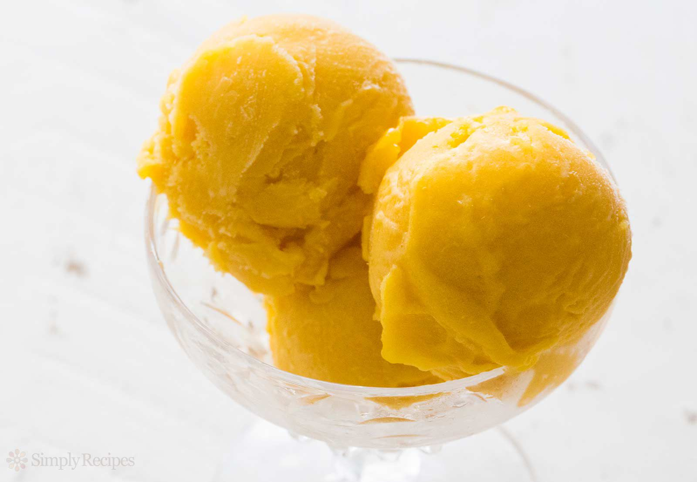

Home
Mango Sorbet Recipe

Description
I love this recipe it's so good. Yum yum yum!
A recipe passed down for generations.
Ingredients:
- 2 ripe mangos
- 100ml / 3.4 fl. oz tinned coconut milk
- 2 tbsp maple syrup
- 1/2 lime, juice only
Steps:
- Line a baking tray with baking paper.
- Trim each mango around the stone so you end up with two halves, criss cross the flesh from each half and scoop out the cubed mango. Then trim the flesh around the stone. Add the flesh from the mangoes to the lined baking tray. Place the baking tray in the freezer and freeze for a minimum of 4 hours or overnight.
- Add the frozen mango to a food processor along with the coconut milk, maple syrup and lime juice, then process until smooth. Serve immediately or transfer to an airtight and freezer-proof container and freeze further for a more solid consistency.